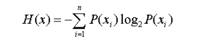
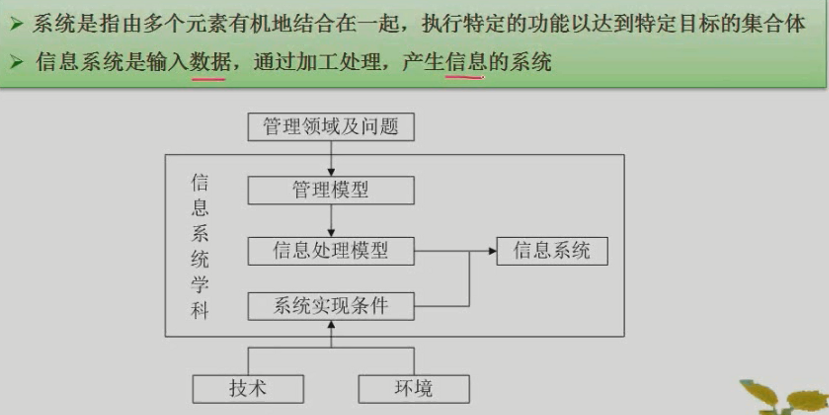
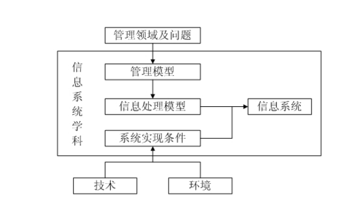
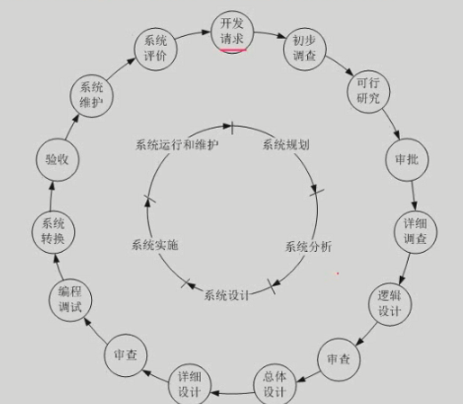

全文链接：https://www.cnblogs.com/nullering/p/9684820.html
一：信息系统基础
1：信息
不确定性的减少，系统有序程度的度量
信息论：单位bit，
熵：

信息的基本特征：
客观性，普遍性，无限性，动态性，依附性，变换性，传递性，层次性，系统性，转换性，及时性，安全性
2：信息系统

信息系统的数据环境
1）数据文件
2）应用数据库
3）主题数据库 综合、共用数据库
4）信息检索系统 数据仓库
信息系统的应用层次
战略级、战术级、操作级和事务级。信息系统的分级对应公司管理活动的分级，也对应着用户的层级。企业信息化就是信息系统的建设和运行。
3：信息系统工程
简单地说，信息系统就是输入数据，通过加工处理，产生信息的系统。
区别于其他工程：研究方法上的整体性，技术应用上的综合性，工程管理上的科学性
信息系统工程以数据为基础，信息系统工程的主要特点：以数据为中心，2）工程实施包括业务系统实施和支撑系统的实施。业务是软件的技术内容；支撑系统包括硬件、网络等

二：信息系统建设
1：系统开发生命周期

- 系统规划：开发目标，总体架构，组织结构，管理流程，实施计划，基础规范
- 系统分析：为系统设计提供逻辑模型，组织结构及功能分析、业务流程分析、数据和数据流程分析、系统初步方案
- 系统设计：总体设计，详细设计，系统架构设计、数据库设计、处理流程设计、功能模块设计、安全控制方案设计、系统组织和队伍设计、系统管理流程设计
- 系统实施：
2：信息系统建设的原则：
1、高层管理人员介入 2、用户参与开发 3、自顶向下规划 4、工程化 5、其他原则
3：信息系统开发方法
1、结构化方法 结构化方法是目前最成熟、应用最广泛的信息系统开发方法之一。它假定被开发的系统是一个结构化的系统，将系统的生命周期分为系统调查、系统分析、系统设计、系统实施、系统维护等阶段（跟信息系统的实际生命周期十分吻合），遵循工程规则，结构化、模块化进行开发，一般要对系统进行模块分解或组合。特点： 1）开发目标清晰 2）工作阶段程式化 3）开发文档规范 4）设计方法结构化
结构化方法特别适合业务工作比较成熟、定型的系统，如银行、电信、商品零售等行业。
2、原型法 开发过程包括 1）系统需求分析 2）系统初步设计 3）系统调试 4）系统检测 然后返回步骤1
用户仅需在系统分析与系统初步设计阶段对系统进行简单描述，开发人员在获取基本需求定义之后，利用开发工具生成应用系统原型，快速建立一个最初版本，提交给用户试用、评价，根据用户提出的意见和建议进行修改和补充，形成新的版本，再返回给用混。如此多次反复，使得系统不断细化和扩充，直到生成一个用户满意的方案。
原型法特别适合用户需求模糊，结构性差的系统的开发。
3、面向对象方法 利用面向对象的信息建模概念，如实体、关系、属性等，同时运用封装、继承、多态等机制来建造模拟现实系统。 结构化方法面向过程，系统分解成过程；面向对象的开发过程，各个步骤的目标是为了建造一个模型，处理的元素是对象，类等。
4、面向服务的方法 面向对象构建在类和对象之上，于是形成了构件（Component）的概念，对于跨构件的功能调用，采取接口的形式。这又进一步发展成接口定义与实现解耦，催生了服务和面向服务的开发方法。
面向服务提高了系统的可复用性，信息资源共享和系统之间的互操作性。面向服务方法成为一种趋势。
4：战略规划
以数据处理为核心围绕职能部分需求
企业系统规划法：BSP，UC
关键成功因素法：CSF
战略集合转化法：SST
以企业内部MIS为核心围绕企业整体需求
战略数据规范化：詹姆斯马丁，SDP，建立主题数据库
信息工程法：IE,信息战略规划阶段，业务领域分析阶段，系统设计阶段，系统构建阶段
战略栅格法：
综合考虑企业内外环境以集成为核心，围绕企业战略需求
价值链分析：VCV
战略一致性模型：SAM
三：信息化
1：政府信息化与电子政务
电子政务的基本内容

（1）G2G（Government To Government，政府对政府）：政府内部、政府上下级之间、不同地区和不同职能部门之间实现的电子政务活动。G2G模式是电子政务的基本模式，包括电子法规政策系统、电子公文系统、电子司法档案系统、电子财政管理系统、电子办公系统、电子培训系统和业绩评价系统等。
（2）G2E（Government To Employee，政府对公务员）：政府与公务员（即政府雇员）之间的电子政务，主要是利用Intranet建立起有效的行政办公和员工管理体系，为提高政府工作效率和公务员管理水平服务。G2E是政府机构通过网络技术实现内部电子化管理的重要形式，也是电子政务的其他模式的基础。
（3）G2B（Government To Business，政府对企业）：政府与企业之间的电子政务，包括电子采购与招标、电子税务、电子证照办理、信息咨询服务和中小企业电子服务等。
（4）G2C（Government To Citizen，政府对公民）：政府与公民之间的电子政务，是指政府通过电子网络系统为公民提供各种服务。包括教育培训服务、就业服务、电子医疗服务、社会保险网络服务、公民信息服务、交通管理服务、公民电子税务和电子证件服务等。
电子政务存在的问题:

电子政务标准（了解）
总则
工程管理
网络建设
信息共享
支撑技术
信息安全
2：企业信息化与电子商务
1)：企业资源计划：ERP
ERP是建立在信息技术基础上，利用现代企业的先进管理思想，全面地集成了企业所有资源信息，并为企业提供决策、计划、控制与经营业绩评估的全方位和系统化的管理平台。

2）：客户关系管理CRM
旨在改善企业与客户之间关系的新型管理机制。它通过提供更快速、更周到的优质服务来吸引或保持更多的客户。
客户服务与支持
客户群维护
商机管理
至少包括触发中心和挖掘中心
3）：供应链管理：SCM
供应链两层含义，一层含义是任何一个企业内部都有一条或者几条供应链，包括从生产到发货的各个环节
另一层含义是一个企业必定处于市场更长的供应链之中，包括从供应商的供应到顾客的每一个环节。
现代意义的供应链是利用计算机网络技术全面规划供应链中的商流、物流、信息流、资金流等并进行计划、组织、协调和控制。
供应链管理至少包含以下六大应用功能：需求管理（预测和协作工具），供应链计划（多工厂计划），生产计划，生产调度，配送计划，运输计划。

4）：产品数据管理PDM
一个能够满足企业各方面应用的PDM产品应具有的九大功能，包括
文档管理()、
工作流和过程管理、
产品结构与配置管理()、
查看和批注、
扫描和图像服务、
设计检索和零件库、
项目管理、
电子协作、
工具与“集成件”功能。
5）：商业智能BI
一般认为数据仓库、OLAP和数据挖掘技术是BI的三大组成部分。
BI系统主要包括数据预处理、建立数据仓库、数据分析及数据展现四个主要阶段。
6）：决策支持系统DSS


DSS与MIS的区别：
1：DSS所追求的目标是高效能，想方设法安排好，MIS追求的是高效益，想法设法安排的快
2：DSS作用是决策，如何根据决策需要提供有价值的信息。MIS如何考虑完成任务
3：设计思想实现适用性强的，MIS实现稳定的工作心态
4：DSS充分发挥人的创造力与决策力，MIS强调系统客观性
5：DSS设计方法为模型驱动，MIS以数据驱动，以数据库为中心
6：组成，MIS由用户系统接口系统和数据库系统。
7：DSS人机规划，MIS
7）：知识管理
显性知识
隐形知识
8）：企业应用集成
1．企业内的集成：是要解决在企业内部业务流程和数据流量
2．企业间应用集成
3．集成模式：
目前市场主流的集成模式有三种，分别是
面向信息的集成技术、
面向过程的集成技术
面向服务的集成技术
9）：业务流程重组（BPR）
BPR是对企业的业务流程进行根本性的再思考和彻底性的再设计，从而获得可以用诸如成本，质量，服务和速度等方面的业绩来衡量的显著性成就
以流程为中心的原则
团队管理原则（以人为本）
以客户为向导的原则
规划步骤：
战略规划，流程规划，数据规划，功能规划，实施规划
10）：企业门户
企业门户可以划分为三类：
信息门户（EIP）
知识门户（EKP）
应用门户（EAP）
以及通用门户
11）：电子商务